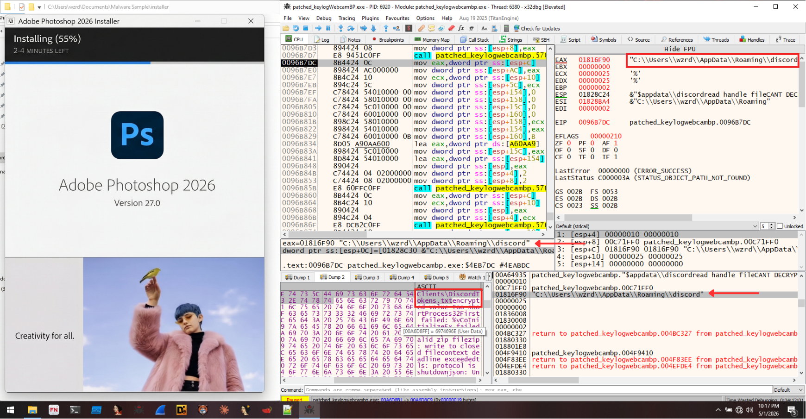
My PC was infected by ransomware after I installed a cracked version of Adobe Photoshop. The hacker told me to sit and cry, but what did i actually do? I reversed it. Actually, I love using pirated software because it offers premium versions for free, but I also have zero tolerance for being hacked by someone as a result of using it. Most people might just format their drives and move on. I did the opposite. I stayed in the environment to see exactly how the malware was talking to the attacker’s server. Instead of paying the ransom, I opened the binary and perform static, dynamic, and network analysis.
This is the second time I perform Malware Analysis in my self-research project, called Crime & Punishment. This time, the case I encountered was in the form of pirated Adobe Photoshop which, when installed, didn’t take long for the victim’s laptop to be infected by ransomware.
Note: This blog covered a long and detailed report to explain my flow during analysis and how to bypass malware evasions. If you feel tired/bored reading the entire content and want to see the result directly, you can quickly go to the Malware Capability section.
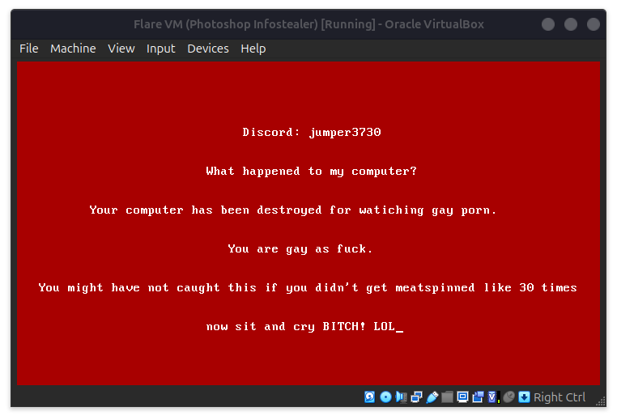
Initial Recon
During analysis, I really didn’t think that the file I was running was a ransomware because from the hash results on VirusTotal, many vendors indicated that the suspected binary file was a Trojan & Infostealer, not ransomware. Actually, both make sense because before my VM was infected by ransomware, I saw several PowerShell and cmd.exe processes in Task Manager that might be executing data theft commands before the ransomware screen finally appeared.
In this confusion, I once heard a quote saying “Talk is cheap, show me the code”. Well, it applied here. Assuming things are useless unless you proof it, so let’s start from the recon!
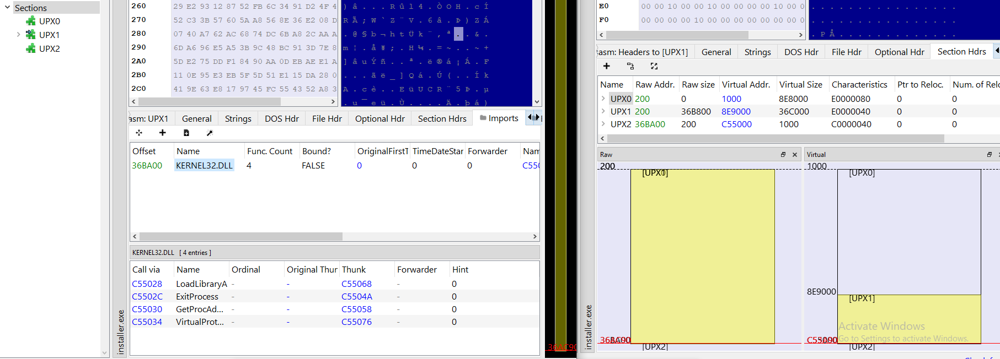
First thing I do is to just let PE Bear tell me what I’m dealing with. Looking at the image below, The Imports tab at the bottom shows only one DLL with 4 entries. Based on this explanation (especially on the first patch), ExitProcess API would worth to note among those 4 APIs. The section view on the right side of the image above shows that UPX1 contains the full compressed payload. Looking at the IAT, it only shows KERNEL32.DLL. This means all the sensitive Win32 APIs are resolved at runtime using GetProcAddress.
Defeating the UPX Packer
From the initial recon, we know that the attacker packed the malware using UPX to make string extraction useless and to reduce the file size. The executable file have only 3.5 MB packed, but actually after unpacking, it explodes to 12.5 MB. UPX is one of the laziest obfuscation methods out there. One command to reverse it:
upx -d installer.exe -o unpacked.exe
After unpacking, the section layout looks like a normal PE structure:
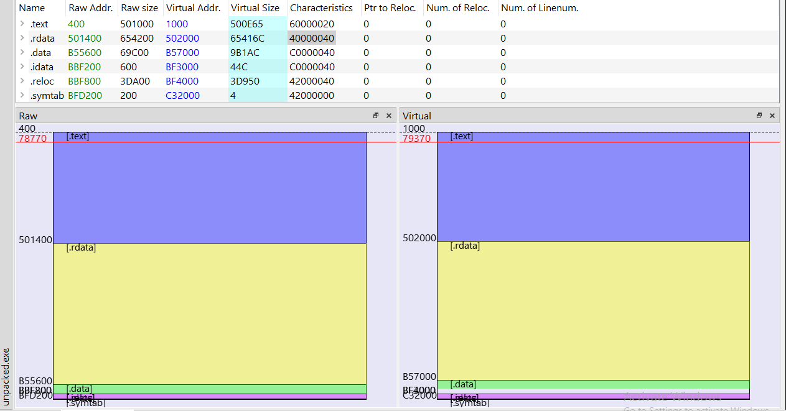
The unpacked binary’s section headers shown here confirm all six sections are present. To really see what changed between the packed and unpacked versions, I opened both side-by-side in PE-bear’s compare view.
To really see what changed between the packed and unpacked versions, I opened both side-by-side in PE-bear’s compare view on the image below. The left side is installer.exe (packed). You can see it only has three sections: UPX0, UPX1, and UPX2. The right side is unpacked.exe after upx -d. Now we have the real section layout. But what caught my eye more was the hex view of the unpacked binary’s .data section, visible at the bottom right. Look at offset 0xB55640, there is salat.mod.salat string.
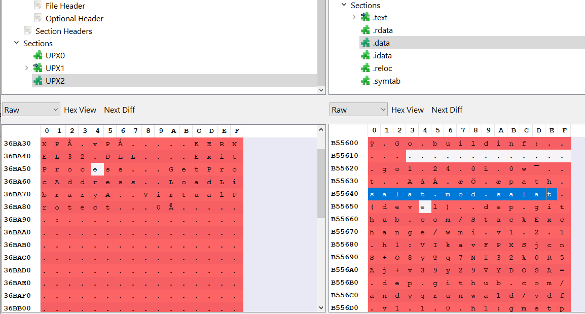
salat is a Go module name, and it’s embedded in the binary. Right above it at 0xB55620 you can read go1.24.0, confirming the Go version. And below it are the dependency paths: dep.github.com/StackExchange/wmi.v1.2.1 and dep.github.com/andygrunwald/vdf which is the WMI library used for system reconnaissance queries, and a VDF parser for Steam which might be used for credential theft (We’ll confirm it later on static analysis). The attacker didn’t even strip it so I got a bunch of usefull strings without ever touching a decompiler.
Recovering Strings and Function Names
During static analysis on malware written in Go, I found the Ghidra plugin GolangAnalyzerExtension very helpful. This plugin automatically renames all functions and recovers strings so i don’t need to analyze it manually on my own.
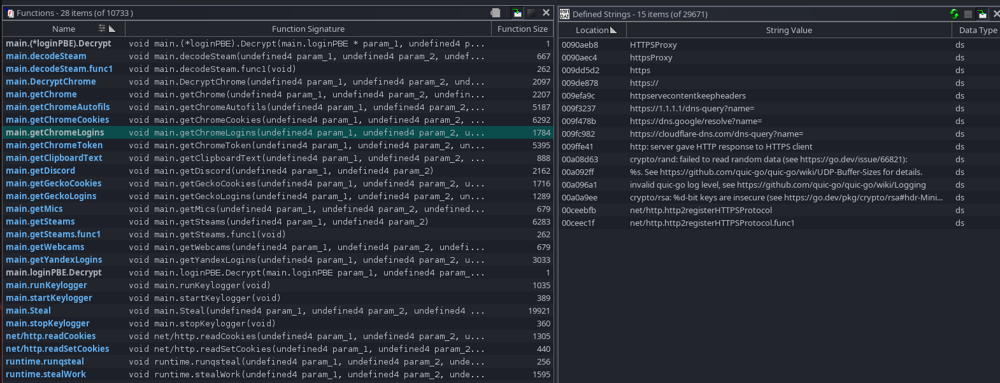
What you see above is a filtered view. Looking at the left panel, the most important one is main.Steal (19,921 bytes in size). This is the master orchestrator. It calls out to every sub-stealer, aggregates the results, and hands them off for exfiltration. Every other main.* function in this list is essentially a worker that main.Steal coordinates. You can guess its capability just from the function names.
Defeating the Malware Evasion Techniques
This is where the fun started. Static analysis already told me the malware was dangerous, but when I moved into x32dbg and tried to stop on main.Steal function, the program didn’t behave like a normal Go binary. Instead of letting me follow the code path, it reacted to the debugger state and terminated itself.
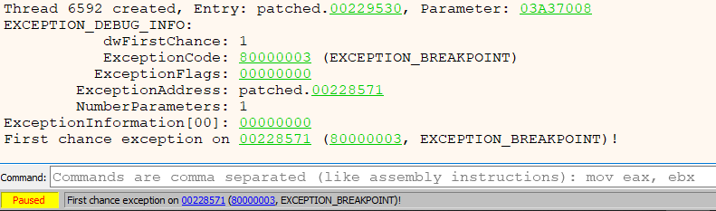
The first thing that made me suspicious was the presence of GetThreadContext and SetThreadContext. During my analysis, those APIs will inspect the thread context and look at debug registers DR0-DR7. So if I place hardware breakpoints, the malware can see them. If it sees them, it will trigger anti-analysis code and ruin the session before I ever reach main.Steal or any user-defined functions. So I removed hardware breakpoints and cleaned the debugger state.
One thing to note is that the binary has ASLR enabled. That means the image base will change on each executions and I should not trust absolute addresses across different runs. So I use module-relative offsets such as patched_v2.exe+4EB760, not stale absolute addresses.
Patch 1: Redirect the Self-Termination Wrapper
You couldn’t reach main.Steal directly because it will trigger self-termination before normal execution got there. During analysis, local wrapper at +3A8E0 will led to self-termination before I could reach the stealer orchestration logic. My idea is to redirect the wrapper so it jumps into the malware’s own legitimate internal dispatch path that normally ends up calling main.Steal. This is much cleaner than forcing EIP manually because I still want to preserve the original execution flow as much as possible. The patch was:
old bytes: 83 EC 0C 90 90
new bytes: E9 DB 4F 4C 00That single jump removed the fake exit path and re-routed execution back into the real steal path.
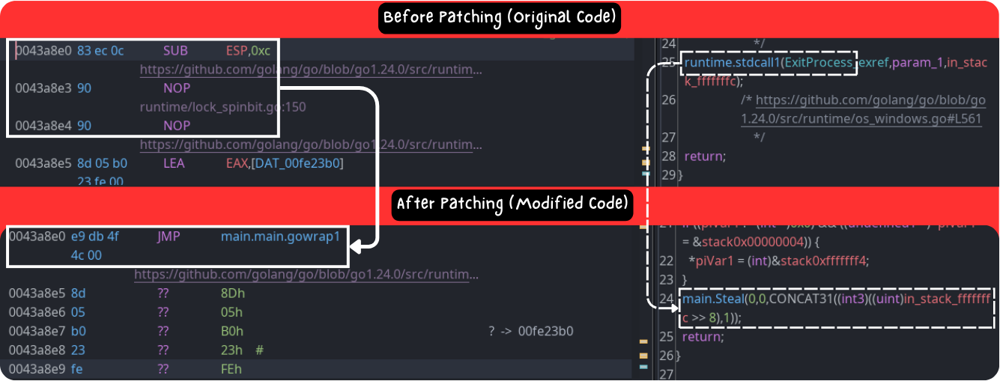
Patch 2: Skip the Intentional Crash Stub
The second defensive trick was even more obvious. At +3E55B, the code zeroed EAX and then wrote to [EAX] which means a null dereference. So I patched that too:
old bytes: C7 00 00 00 00 00
new bytes: E9 01 00 00 00 90This bypasses the deliberate write to address 0x00000000 and lands directly on the cleanup/return path after it. The goal is to stop the malware from rage quitting the moment it notices analysis artifacts.
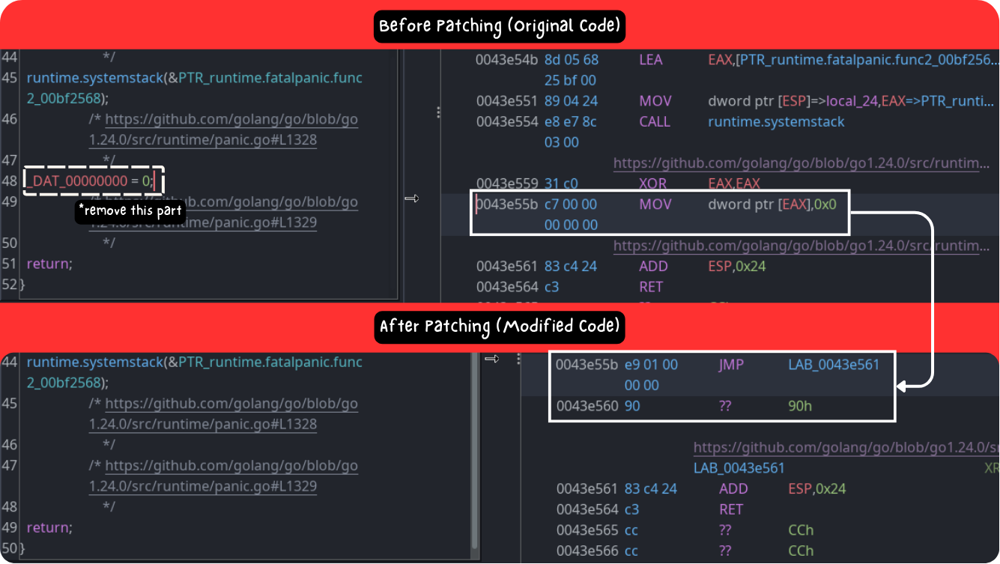
Patch 3: Neutralize runtime.abort for Repeatable Tracing
After patching the early termination and early crash, I managed to reach the interesting code. But the session was still not stable enough for repeatable debug. Later in the run, the process fell into runtime.abort, which in this case ended in a self-loop and effectively killed further useful dynamic analysis.
So I made the third patch in the loop:
RVA 0x78572
old bytes: EB FE
new bytes: C3 90This turns the self-loop into ret ; nop. It’s good enough because it prevents the runtime from trapping me forever after I already passed the anti-debug gates.
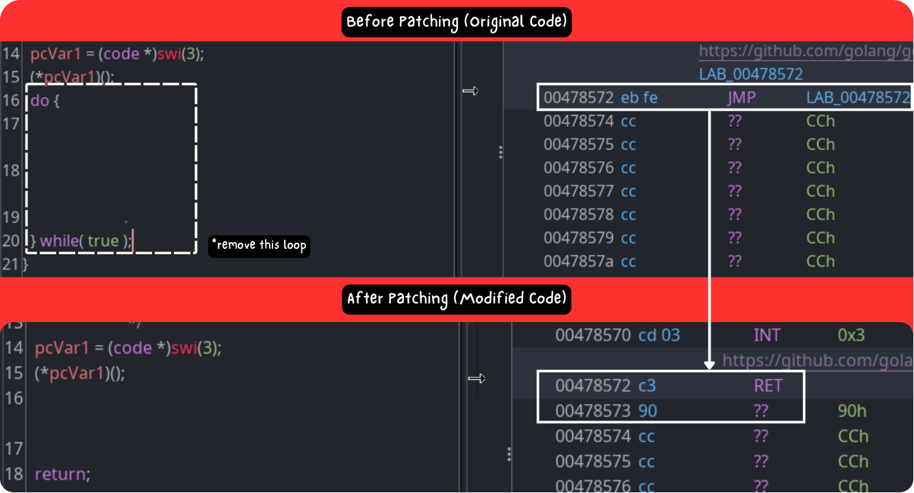
At this point I had a patched binary that was actually traceable. Once the evasions were neutralized, it finally stopped at main.Steal, which is exactly the function I wanted from the beginning. That was the big turning point of the whole case, because main.Steal is the master orchestrator. If I can reach that function, I can start following the browser theft, token theft, Steam theft, and all the result aggregation that happens before exfiltration.
Malware Capability #1: Credential Theft
Not every breakpoint can be fired every time. Some paths depend on which browser artifacts exist in the victim environment. In my case, Chrome-related paths were easy to prove dynamically since i didn’t have Yandex and Gecko in my VM. During analysis on x32dbg, main.getChromeCookies is a function which steals SQLite data. This function is one of the most aggressive ones in the sample.
The screenshot below is the clearest proof. The breakpoint in the left pane shows the code path where the malware prepares browser data from the victim machine. It specifically targets browser SQLite databases, copies them into a temporary location, and then runs SQL queries against the copied database. The malware also queries cookie-related fields such as shown on the dump pane at the bottom.
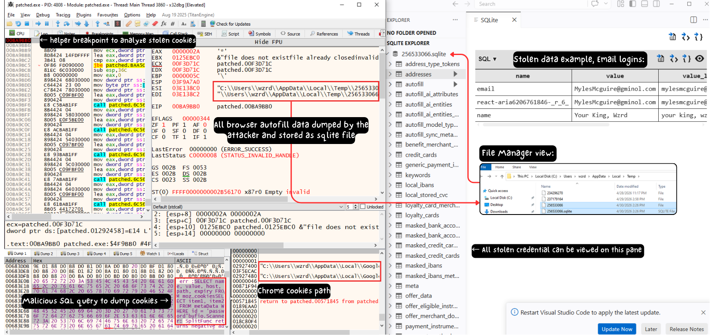
Another thing worth noting is the temporary path:
C:\Users\wzrd\AppData\Local\Temp\256533066
The malware creates a temporary working copy before extraction. This is common because browser databases can be locked while the browser is running. By copying the SQLite database first, the malware can query it without fighting the original browser process.
On the right side, I opened the dumped SQLite file with VSCode. This is a good proof that the malware is really dumping the victim’s autofill data from the browser, and then stored those information as SQLite file. This file contains several columns about stolen data received from the browser records. For example, the addresses table in the image above contains values such as email and name entries.
Looking at the very last column list on the VSCode pane, there is a column named payment method (it accidentally cropped lol..), meaning that if a victim has ever saved payment method information on the browser, then this data can also be seen by the attacker.
Reversing the Encrypted Payload from C2 Communication
After proving the browser theft, i want to know what exactly will be sent to the attacker server. At first, I tried to answer this from network traffic. I thought it will be simple, but it turns out that the malware connected to the C2 over TLS, so the packet capture only showed encrypted application data. That also means Wireshark and Fiddler couldn’t confirm what data is being sent when i execute the malware.
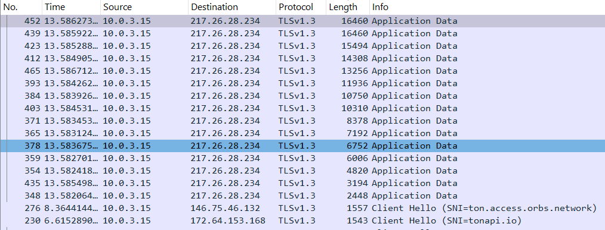
- When running the malware, my VM was communicating with tonapi.io. It’s a tool that simplify integration with TON blockchain.
tonapi.ioandton.access.orbs.networklook more like supporting infrastructure used to resolve TON-related data before the sample switches to the real exfil endpoint.- We’ll talk about those 2 in the next section.
- Other than that domain, There was no SNI in the TLS ClientHello, and no DNS query was observed in the capture.
- The most frequently appearing IP is
217.26.28.234:443. The traffic pattern showed a large client-to-server upload to that IP, which matched the stealer behavior.
I’m not really sure what data is being sent to that IP because it used TLS 1.3 and didn’t expose plaintext content in Wireshark, all content is encrypted. So, in order to see the real payload, I had to catch the data before it entered the malware’s encryption routine. I traced the upload path in x32dbg. Breaking at main.rq was too late because the buffer was already encrypted. The useful breakpoint was before this call inside main.Steal:
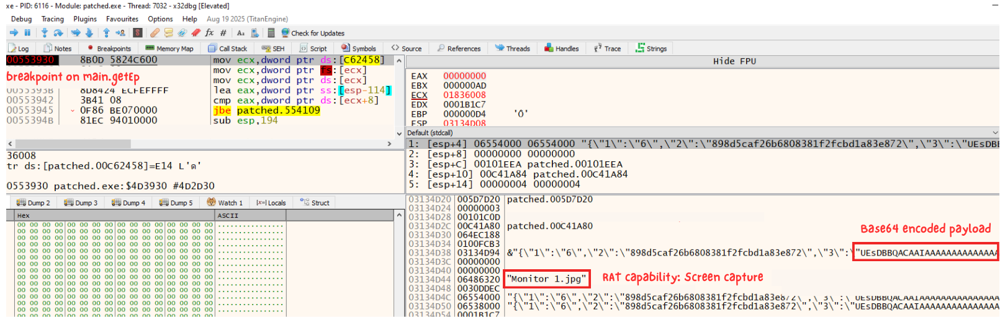
Good, this explains why the pcap was unreadable but x32dbg was able to recover the data. The malware applied its own encryption before the TLS layer, so the real content had to be recovered from memory before main.dec transformed it. The image above shows the result after stopping the program before the encryption/send stage. The plaintext payload was a JSON object that looked like this:
{"1":"6","2":"898d5caf26b6808381f2fcbd1a83e872","3":"UEsDB...","4":"0"}
Field 3 starts with UEsDB. After decoding it, the first bytes became PK, which means that the malware was preparing a ZIP archive before sending it. In short, the malware packages the stolen artifacts into a ZIP, then embeds that ZIP as base64 inside a JSON wrapper. After that, the JSON is encrypted and finally sent to the C2 server.
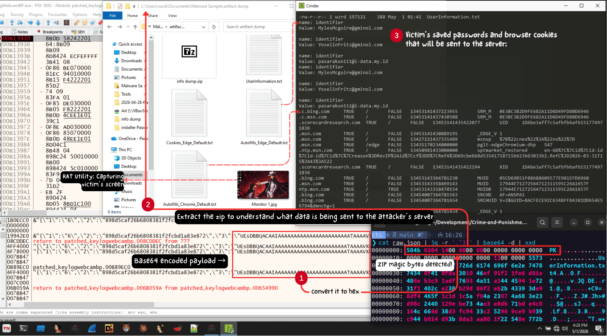
After decoding and extracting the ZIP, I got these files:
UserInformation.txt
Monitor 1.jpg
Browsers/Cookies_Edge_Default.txt
Browsers/Autofills_Edge_Default.txt
Browsers/Autofills_Chrome_Default.txtUserInformation.txt contains machine and build metadata, including HWID, PC name, admin status, build path, build ID, build version, build comment, and screen resolution. The browser files contain copied cookies and autofill values from Edge and Chrome. Monitor 1.jpg is a screenshot taken from the victim screen (this can leak active windows or anything visible during infection.).
Tracing Back Hackers
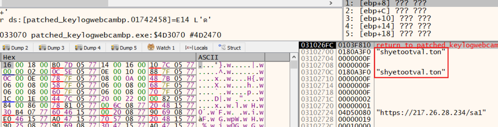
During dynamic analysis on x32dbg, i found suspicious domain name which i didn’t see in the previous section. I queried the domain through TonAPI’s DNS resolve. It returned metadata proving the .ton domain is real and registered in the TON DNS collection. That endpoint tells us the domain exists on-chain.
curl -s https://tonapi.io/v2/dns/shyetootval.ton/resolve
The response was:
{
"wallet": {
"address": "0:3231372e32362e32382e32333400000000000000000000000000000000000000",
"account": {
"address": "0:3231372e32362e32382e32333400000000000000000000000000000000000000",
"is_scam": false,
"is_wallet": true
},
"is_wallet": false,
"has_method_pubkey": false,
"has_method_seqno": false,
"names": []
},
"sites": []
}There are two important takeaways from that result:
sites: []means this domain does not look like a normal TON Site / browser-usable.tonwebsite.- The
wallet.addressfield contains a suspicious value that does not behave like a normal wallet mapping. Instead, it looks like an encoded payload.
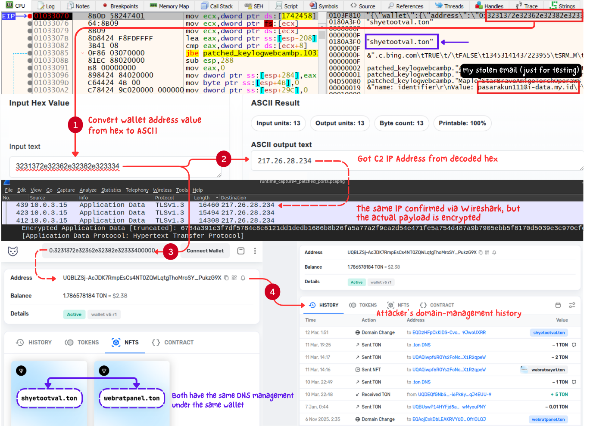
According to the TON DNS documentation, the wallet category normally stores a dns_smc_address record so users can map human-readable names to smart contract wallet addresses. But this record is weird: TonAPI resolves it under the wallet category, yet the returned object also says is_wallet: false, has_method_pubkey: false, and has_method_seqno: false. That inconsistency is a strong hint that the record is being used in a nonstandard or abusive way.
Looking at the wallet.address field, The value after 0: in the resolved address is:
3231372e32362e32382e32333400000000000000000000000000000000000000
Then I decode each byte from hex to ASCII (excluding the zero’s):
2 1 7 . 2 6 . 2 8 . 2 3 4
The remaining 00 bytes are just null padding. That means the resolved TON DNS record is effectively embedding the backend IP address inside the wallet field itself. This IP was the one we just saw in the previous Wireshark traffic.
This fits the network trace perfectly. The previous Wireshark dump shows TON-related resolution traffic, then a direct TLS session to 217.26.28.234:443, which becomes the largest client-to-server upload in the capture. In other words, the malware appears to use TON-related services as an indirection layer, then pivots to a direct TLS connection to the backend IP.